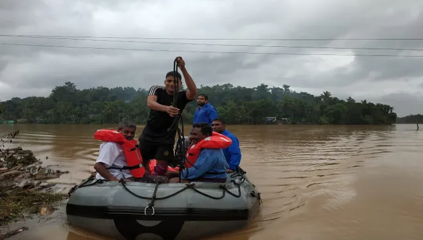

August 2018.
35 dams opened at once.
12.5 lakh people in relief camps.
And about 1 in 4 rescue calls
was someone already reported.
Figures from official reports and The News Minute.1

A map for the people running a flood control room at 2 am.
August 2018.
35 dams opened at once.
12.5 lakh people in relief camps.
And about 1 in 4 rescue calls
was someone already reported.
Figures from official reports and The News Minute.1
So I designed one map that keeps track.
30 seconds of the prototype. A call comes in, it’s a repeat, it gets merged, the morning shift takes over.

Waiting under a roof, August 2018. Indian Navy (GODL-India)
I moved to Kozhikode to teach design.
Every time it rains hard here, someone brings up 2018. I wasn’t in Kerala then, so I started reading.
Most stories were about the fishermen and the Navy. I got stuck on the people in the control room, picking which message to act on every few minutes.
This is for them.
I couldn’t sit in a control room during a flood. So: the CAG audit,2 news from that week, dam bulletins, and long accounts written by volunteers.345 Four things kept coming up.

Rescue coordination at night, Kollam. Kannan Shanmugam, CC BY-SA 4.0

Help arrived faster than anyone could track it

One family, reported five ways

Nobody knew which boat had which request

Supplies piled up in one place, ran out in another
Kannan Shanmugam (CC BY-SA 4.0), Tonynirappathu (CC BY-SA 4.0), Indian Navy (GODL-India), Navaneeth Krishnan S (CC BY-SA 3.0)
I built one night in Ernakulam to design against. 14–15 August.
Three proto-personas from the research. Made up, not interviewed.
| Person | Does | Scared of |
|---|---|---|
| Anjana | Night-shift lead. Owns the picture and the handover. | Missing the one alert that mattered. |
| Rafeeq | Call operator. Logs calls all night. | Sending a second boat to the same roof. |
| Thomas | District Collector. Walks in, wants two minutes. | Not knowing what got worse. |
Borrowed from places that handle alarms every day: process plants (EEMUA 191), hospital handovers (I-PASS) and air traffic control.
It’s its own web app for the desks and the wall screen. It just draws on top of whatever map the district already uses.
It all happens on the same map, so it looks like one screen. It isn’t.


Try it.
What an operator stares at all night. Hover a number.

The first two were too busy. v3 got better mostly by deleting things.
 v1Every data stream on one screen.
v1Every data stream on one screen. v2Fixed the test issues. Still 14 alert cards and a table.v3Just the map. Everything else floats on it.
v2Fixed the test issues. Still 14 alert cards and a table.v3Just the map. Everything else floats on it.v1 and v2 shown with text blurred. The amount of text was the problem.
5 proxy users. Not real ones, yet.
Five profiles drawn from first-hand 2018 accounts: a helpline volunteer, a re-verification volunteer, a teacher running a camp, a control-room volunteer and a revenue clerk. I walked each one through v1.
| Problem | Fix |
|---|---|
| Merge result showed before the decision | Separate steps, with undo |
| Handover risks came pre-ticked | Nothing pre-ticked |
| Mode badge looked like an alert | One quiet chip |
| No headline numbers on the desk | Four numbers at the bottom |
The 10th was a test-setup issue, handled in the briefing.
Talk to someone who was there, before drawing anything.v1 and v2 were dense because I designed around my data, not the person reading it at 2 am.
Cut sooner.The gauge, the table, the freshness chips. Each made sense alone. Together, noise.
Run the real test.Then river timing on the Periyar, Malayalam everywhere, and privacy for camp records.